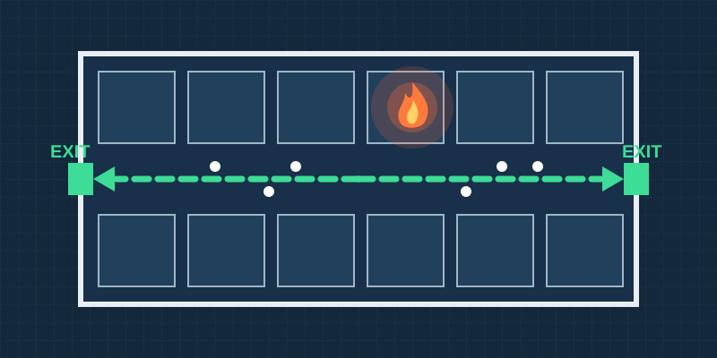

ThesisFire Evacuation Planning of RDA Market
Fire safety assessment and evacuation scenarios for a crowded commercial market in Rajshahi.
Details →Undergraduate thesis at RUET, supervised by Nazia Hossain. The study assesses fire safety in RDA Market, Rajshahi, and develops evacuation scenarios, supported by a PRISMA systematic review of the literature.